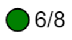
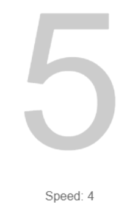

Tap anywhere on the screen to shoot balls. You start with 8. The game is over when you reach 0. Check the bottom left part of your screen to see how many you have.

When a ball hits your target, it will change color. Every block has a numeric representation as well. You will know what color is next (I, II and III).
The purpose of the game is to make all targets have the same color/number.
You get a point every time you do this. On each level the target move speed increases and you get more balls.

Power ups will float on your screen. Shoot them. They will give you an extra ball or they will slow the target move speed.
Time and calculate your shots. Score as many points as you can and rise to the top of the leaderboard.